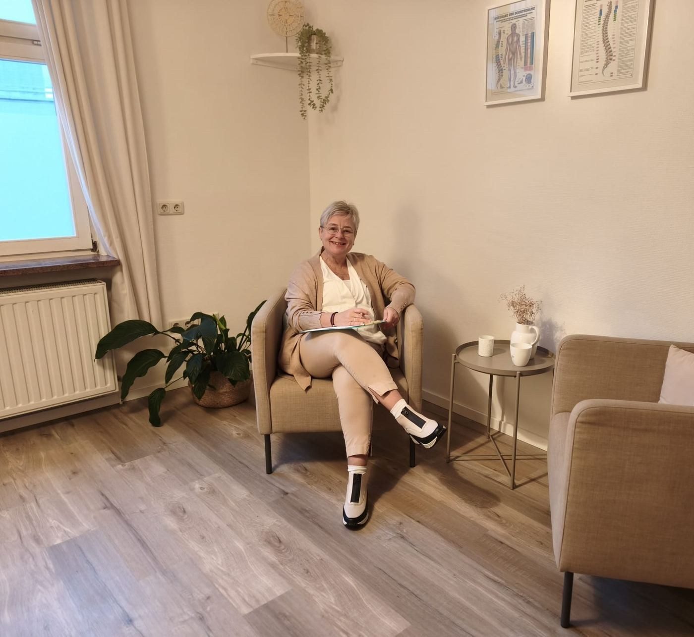

Ihre Heilpraktikerin für Psychotherapie in Coburg und Ahorn.
Sie stecken in einer Krise, allein oder als Paar? Ich begleite Sie mit Psychotherapie (HPG), Paartherapie und Coaching. In Ahorn, in Coburg oder online.
★★★★★ 5,0 bei Google · 15 Bewertungen
Kostenloses Erstgespräch buchenAngebote ansehen →
15 Minuten, kostenlos. Online buchen, anrufen oder schreiben.

Sabine SchwarzHeilpraktikerin für Psychotherapie · Paartherapeutin
Erlaubnis seit 2019Heilpraktikerin für Psychotherapie